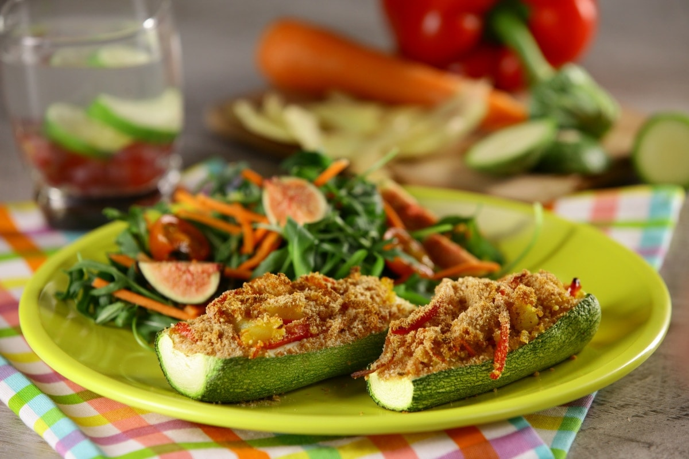
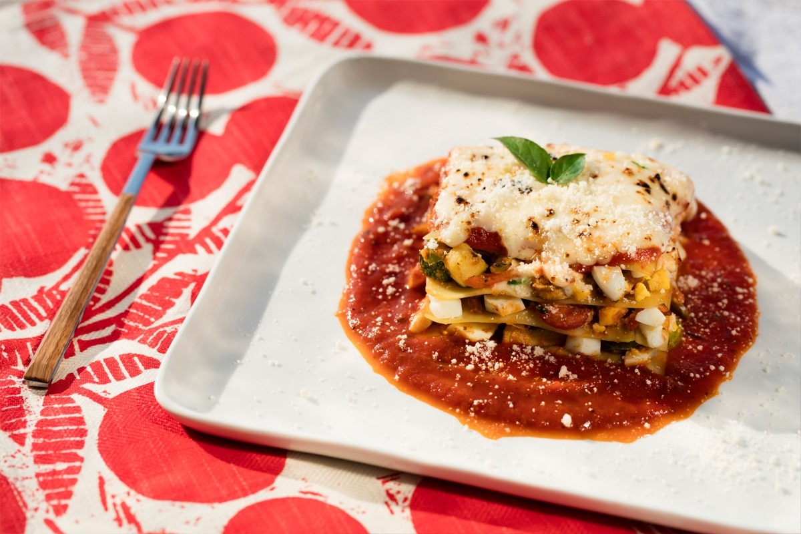

CALABAZA RELLENA DE VEGETALES Y QUÍNOA
Ingredientes
- 2 calabazas, italiana
- 2 cucharadas de aceite de oliva
- 1 cucharada de cebolla
- 2 zanahorias, cortada en tiritas
- 1 papa, cortada en cubos
- 2 pimientos rojos
- 1 taza de quinoa, cocida
- 1 cucharadita de curry
- Pan molido
- Sal y pimienta al gusto

Preparación
- Procalienta el horno a 180°C.
- Corta las calabazas a lo largo y retira el relleno. Coloca en un bowl con agua y reserva.
- En una sartén a fuego medio agrega el aceite y añade la cebolla, agrega las zanahorias, la papa, el pimiento rojo y cocina por 3 minutos, sazona con curry sal y pimienta.
- En una charola coloca las calabazas y agrega el relleno, coloca encima pan molido y hornea por 10 min.
TAQUITOS DE NOPAL RELLENOS DE REQUESÓN
Ingredientes
- 5 nopales cambray
- 1 cucharada de bicarbonato
- 2 cucharadas de aceite
- 1/2 tazas de cebolla, picada
- 1 taza de jitomate, cortada en cubos
- 3 chiles serranos, picados
- 2 tazas de requesón
- 3 jitomates para la salsa
- 1/3 cebolla para salsa
- 1 diente de ajo para salsa
- Sal y pimienta al gusto

Preparación
- En una ollita con agua cocina los nopales con sal y bicarbonato, hasta que estén cocidos. Deja enfriar y reserva.
- En una sartén a fuego medio calienta el aceite, agrega la cebolla, el jitomate, el chile serrano y cocina hasta que cambien ligeramente de color, agrega el requesón, sazona con sal y pimienta cocina por 5 minutos. Reserva.
- En una tablita rellena los nopales con el requesón y cierra con palillos pequeños de brocheta. Reserva.
- Para la salsa, en un comal asa los jitomates, la cebolla, el chile serrano y el ajo.
- Licúa lo anterior, sazona con sal
- Sirve en un plato la salsa anterior y encima coloca los taquitos de nopales, decora con cilantro.
LASAÑA DE CLARAS DE HUEVO
Ingredientes
- 75 gramos de clara de huevo
- 3 pastas para lasaña
- 200 mililitros de salsa, casse
- 2 albahaca
- 50 gramos de queso parmesano, rallado
- 50 gramos de queso mozzarella
- 40 gramos de brócoli
- 40 gramos de calabaza/li>
- 40 gramos de zanahoria
- 30 gramos de cebolla
- 10 gramos de ajo
- 20 mililitros de aceite de oliva extra virgen

Preparación
- Colocar en una taza un cuadro de vita film con en centro hundido o formando un hueco, poner la clara de huevo dentro salpimentar y cerrar con las puntas hacia arriba con un nudo y poner a cocer la Clara de Huevo San Juan® en agua hirviendo por 5 minutos, dejar enfriar cortar en cubo y reservar.
- Pre-calentar el horno a 180°C
- En una sartén con aceite sofreír ajo, cebolla, zanahoria, brócoli y calabaza, en ese orden para evitar que se sobre cocinar la calabaza, mezclar con las claras cocidas.
- En un refractario poner una lámina de pasta, barnizar con salsa casse, rellenar de verduras y claras, espolvorear queso parmesano, repetir el proceso 3 veces más o hasta terminar los ingredientes, finalizar con el queso mozzarella y un poco de aceite de olivo.
- Hornear por 15 minutos para gratinar el queso.
- ervir con un espejo de salsa casse caliente decorar con queso parmesano, aceite y hojas de albahaca.